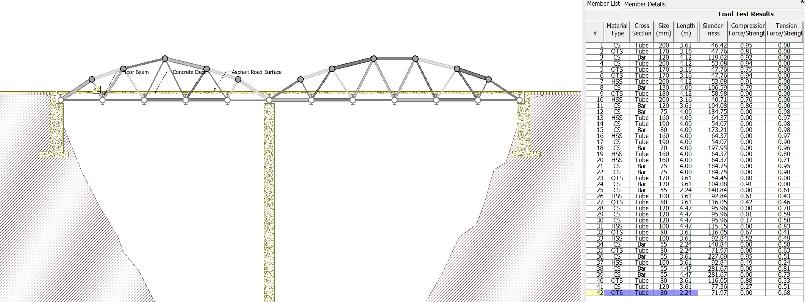
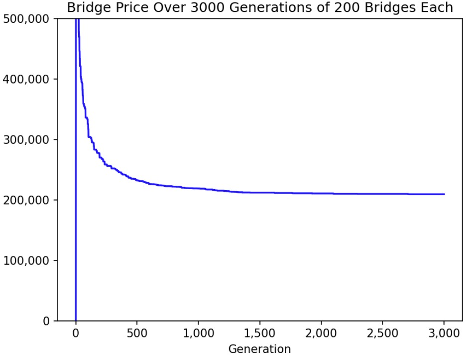

Bridge Builder
In my Civil Engineering class, students were tasked with determining the optimal size, shape, and material for each beam of a bridge to yield the most cost-effective design capable of sustaining 225kN of force. The class was instructed to input specifications for each beam into the West Point Bridge Designer software which calculated the cost and strength of each design.
Through trial and error, I arrived at a bridge that sustained the required weight at a relatively low cost. However, I wanted to see whether I could automate the process to test hundreds of thousands of permutations of the three inputs for each beam to come up with a more optimal design. I wrote a Python script to mimic a user entering the three parameters for each beam. Unfortunately, the input process for West Point Bridge Designer software involved multiple drop down menus and animations which significantly slowed the simulation time, making this approach impractical. In order to come up with a more efficient approach, I examined West Point Bridge Designer’s open-source code, written in Java, to understand how it was calculating the forces for the simulation.
To circumvent the cumbersome user interface, I coded a more focused bridge simulator without a user interface or animations. I also implemented a genetic algorithm to test many different designs and find the lowest-cost bridge that held the required weight. As the simulator ran, it drove continuous improvements in bridge design and reductions in price.
Here's a sample bridge generated by the program after trying 600,000 designs:


Download the Bridge File here!
Documentation
There are two steps in running the simulation: running the genetic algorithm and configuring the shape.
Download all of the code for the project here!
Running the Genetic Algorithm
main.py is responsible for running the genetic algorithm. The NUM_GENS variable defines for how many generations the simulation will run, and the POP_SIZE variable defines how many bridges will exist in the population of each generation. The script uses Matplotlib to graph the price of bridges versus the generation number.
The main loop exists in the run_evo_sim function. It initializes the population, then for each generation, evaluates the fitness of each bridge, removes the bottom 50%, creates offspring from the remaining bridges, mutates bridges randomly, and repeats. I found that looping through the number of bridge members mutated for each bridge in a popuation (i.e. the first bridge mutates one member, the second bridge mutates two members) helped avoid local maximums and continually improve performance even many generations into the simulation.
main.py
import random, time, pickle
from bridge_utilities import calculate_score, MATERIALS, SIZES, TYPES, get_price, enact_bridge
import matplotlib.pyplot as plt
import matplotlib as matplt
from bridge_settings import CURRENT_SETTING, INITIALIZED_BRIDGE
import pandas as pd
# Function to initialize a population
def initialize_population(population_size):
population = []
for _ in range(population_size):
if INITIALIZED_BRIDGE is None:
bridge = [(random.choice(MATERIALS), random.choice(TYPES), random.choice(SIZES[14:])) for _ in range(CURRENT_SETTING['num_members'])]
else:
df = pd.read_csv(INITIALIZED_BRIDGE)
bridge=[(r['Member ID'], r['Material Type'], [x for x in SIZES if r['Type']== x[0]][0]) for r in [df.iloc[_] for _ in range(CURRENT_SETTING['num_members'])]]
population.append(bridge)
return population
bridge_mutation_counter = 0
# Function to mutate a bridge
def mutate(bridge):
global bridge_mutation_counter
mutated_bridge = bridge[:]
first = True
r = random.random()
i = 0
while i < bridge_mutation_counter % 30:
i += 1
first = False
member_to_mutate = random.randint(0, CURRENT_SETTING['num_members']-1)
attribute_to_mutate = random.choice(["material", "type", "size"])
if attribute_to_mutate == "material":
mutated_bridge[member_to_mutate] = (random.choice(MATERIALS), bridge[member_to_mutate][1], bridge[member_to_mutate][2])
elif attribute_to_mutate == "type":
mutated_bridge[member_to_mutate] = (bridge[member_to_mutate][0], random.choice(TYPES), bridge[member_to_mutate][2])
else:
mutated_bridge[member_to_mutate] = (bridge[member_to_mutate][0], bridge[member_to_mutate][1], random.choice(SIZES))
bridge_mutation_counter += 1
return mutated_bridge
# Function to run the evolutionary simulation
def run_evo_sim(population_size, fig, line1, NUM_GENS):
population = initialize_population(population_size)
generation = 1
highest_fitness_score_over_gen = [0]*(NUM_GENS)
while True:
# Evaluate the population
fitness_scores = [calculate_score(bridge) for bridge in population]
# Select the top 50% of the bridges
top_bridges = [bridge for _, bridge in sorted(zip(fitness_scores, population), key=lambda x: -x[0])][:population_size // 2]
highest_fitness_score_over_gen[generation] = get_price(top_bridges[0])
# Crossover and mutation
new_population = top_bridges[:]
while len(new_population) < population_size:
parent1, parent2 = random.sample(top_bridges, 2)
crossover_point = random.randint(1, CURRENT_SETTING['num_members']-1)
child = parent1[:crossover_point] + parent2[crossover_point:]
mutated_child = mutate(child)
new_population.append(mutated_child)
population = new_population
global bridge_mutation_counter
bridge_mutation_counter += 1
generation += 1
if generation % 100 == 0:
print("Generation:", generation, "| Best Score:", max(fitness_scores), " | Price:",[get_price(_) for _ in top_bridges[0:5]])
line1.set_ydata(highest_fitness_score_over_gen)
fig.canvas.draw()
fig.canvas.flush_events()
if generation == NUM_GENS:
print("FINAL BRIDGE")
print(top_bridges[0])
sc = calculate_score(top_bridges[0],log=True)
print("SCORE:",sc)
with open(f"bridge_saves/BEST_BRIDGE_fitness_{str(round(get_price(top_bridges[0]),3)).replace('.','-')}.obj", "wb") as file:
pickle.dump(top_bridges[0],file)
input("Press enter to enact the bridge:")
time.sleep(3)
enact_bridge(top_bridges[0])
break
if __name__ == "__main__":
NUM_GENS = 3000
POP_SIZE = 200
plt.ion()
fig = plt.figure()
ax = fig.add_subplot(1,1,1)
line1, = ax.plot(list(range(1,NUM_GENS+1)), [0]*NUM_GENS, 'b-')
ax.set_xlabel("Generation")
ax.set_ylabel("Price ($)")
ax.set_title(f"Bridge Price Over {NUM_GENS} Generations of {POP_SIZE} Bridges Each")
ax.get_xaxis().set_major_formatter(
matplt.ticker.FuncFormatter(lambda x, p: format(int(x), ',')))
ax.get_yaxis().set_major_formatter(
matplt.ticker.FuncFormatter(lambda x, p: format(int(x), ',')))
plt.ylim(0, 500000)
# Running the algorithm
run_evo_sim(POP_SIZE, fig,line1, NUM_GENS)
Configuring the Shape
The simulation is designed to find the optimal combination of member materials, sizes, and shapes, but not design the overall structure of the bridge. I have already configured one bridge shape (you can download a bridge of this shape here).
To add a new shape to the simulation, you must generate the minimums_csv file and strength_data files, as well as add the bridge to bridge_settings.py. Click here to find the detailed instructions of collecting strength data, and click here to find the detailed instructions of how to modify the settings file.
Storing Maximum Member Loads
get_all_strengths.py tests all setting combinations for a bridge member of a given length and records the maximum load that member can sustain. This file relies on opening Google Sheets and the West Point Bridge Designer software. Also, coordinates that fit the computer's screen layout must be collected in get_pos.py and entered before running. Since the maximum load varies slightly as the settings of other bridge members change, I implemented a factor of safety of 1% in bridge_utilities.py.
To run this file, first open a new Google Sheet. In West Point Bridge Designer, go to Report > Load Test Results for any bridge of the same shape as your design. Copy the spreadsheet and paste it into Google Sheets. Adjust the row widths until both the cell you pasted the spreadsheet into and the compression strength and tension strength columns of the member you are testing are visible. Use get_pos.py to find the coordinates of each of these cells on the screen, and record them in the variables excel_comp, excel_ten, and excel_pst. Also change the name of the output file (which you will enter into bridge_settings.py). If any of the other coordinate variables do not match your screen size, adjust them as well. Then run this file, quickly open the Google Sheet, then West Point Bridge Designer (the code uses alt+tab to navigate between the pages). To not move the mouse or click anything until the data collection has finished. To emergency stop, move the mouse to the top left side of the screen.
get_all_strengths.py
import read_text
from time import sleep
import pyautogui as pg
from tkinter import Tk
import pickle
# three seconds after starting program to open google sheets, then West Point Bridge Designer (so that alt+tab goes between the pages)
sleep(3)
class BridgeMember(object):
def __init__(self, id, mouse_pos, material_option_pos, num_material_options, type_option_pos, num_type_options, size_option_pos, num_size_options):
self.id = id
self.mouse_pos = mouse_pos
self.material = None
self.size = None
self._type = None
self.num_material_options = num_material_options
self.num_type_options = num_type_options
self.num_size_options = num_size_options
self.material_option_pos = material_option_pos
self.type_option_pos = type_option_pos
self.size_option_pos = size_option_pos
def set_material(self, material):
self.material = material
def set_type(self, _type):
self._type = _type
def set_size(self, size):
self.size = size
def enact_member(self, m, t, s):
f(self.material_option_pos)
sleep(0.1)
pg.press("up", presses=self.num_material_options, interval=0.01)
pg.press("down", presses=m, interval=0.01)
pg.press("enter")
pg.press("tab")
pg.press("up", presses=self.num_type_options, interval=0.01)
pg.press("down", presses=t, interval=0.01)
pg.press("enter")
pg.press("tab")
pg.press("up", presses=self.num_size_options, interval=0.01)
pg.press("down", presses=s, interval=0.01)
pg.press("enter")
# use get_pos.py to find these coordinates
excel_comp = (1095,1195) # compression strength cell in Google Sheet
excel_ten = (1545,1191) # tension strength cell in Google Sheet
excel_pst = (129,447) # cell where to paste in Google Sheet
copy_to_clipboard = (1320,940) # coordinates of copy to clipboard button in `Report > Load Test Results` in West Point Bridge Designer
TEST_POS = [174, 80] # coordinates of the run simulation test button in West Point Bridge Designer
STOP_TEST_POS = [146, 78] # coordinates of the stop simulation test button in West Point Bridge Designer
report_tab = (238,47) # coordinates of the `Report` tab in West Point Bridge Designer
report_but = (254,101) # coordinates of the `Load Test Results` button in West Point Bridge Designer
close = (1535,942) # coordinates of the close button of the popup in West Point Bridge Designer
bar = (846,399) # coordinates of the bridge member being tested in West Point Bridge Designer
MATERIAL_POS = [186, 121] # position of material selection dropdown for a bridge member in West Point Bridge Designer
# click
def click_pos(p):
pg.moveTo(p[0],p[1],0.2)
pg.click()
# copy
def c():
data = Tk().clipboard_get()
return data
# transfer the bridge data into excel
def do_bridge():
click_pos(STOP_TEST_POS)
sleep(0.5)
click_pos(report_tab)
click_pos(report_but)
click_pos(copy_to_clipboard)
click_pos(close)
pg.keyDown("alt")
pg.press("tab")
pg.keyUp("alt")
click_pos(excel_pst)
pg.keyDown("ctrl")
pg.press("v")
pg.keyUp("ctrl")
sleep(1)
click_pos(excel_ten)
pg.keyDown("ctrl")
pg.press("c")
pg.keyUp("ctrl")
sleep(0.5)
ten = float(c().strip())
click_pos(excel_comp)
pg.keyDown("ctrl")
pg.press("c")
pg.keyUp("ctrl")
sleep(0.5)
com = float(c().strip())
pg.keyDown("alt")
pg.press("tab")
pg.keyUp("alt")
return(com,ten)
# all settings options
SIZES = [(30,2),(35,2),(40,2),(45,2),(50,2),(55,2),(60,3),(65,3),(70,3),(75,3),(80,4),(90,4),(100,5),(110,5),(120,6),(130,6),(140,7),(150,7),(160,8),(170,8),(180,9),(190,9),(200,10),(220,11),(240,12),(260,13),(280,14),(300,15),(320,16),(340,17),(360,18),(400,20),(500,25)]
MATERIALS = ["CS", "HSS", "QTS"]
TYPES = ["Bar", "Tube"]
# boxes if the bridge fails the "slenderness test" and gets a store of zero (edge case)
CLOSE_BOX = {'top': 830, 'left': 1251, 'width': 1306-1251, 'height': 841-826}
SLENDERNESS_BOX = {'top': 449, 'left': 833, 'width': 1321-833, 'height': 485-449}
DATA = [[[]]]
for i,m in enumerate(MATERIALS):
for j,t in enumerate(TYPES):
for k,s in enumerate(SIZES):
b = BridgeMember(0, MATERIAL_POS, 3, None, 2, None, len(SIZES))
DATA[i][j].append(None)
click_pos(bar)
b.enact_member(i,j,k)
click_pos(TEST_POS)
sleep(1)
print(read_text.scan_text(SLENDERNESS_BOX).lower().strip())
slenderness_failed = read_text.scan_text(SLENDERNESS_BOX).lower().strip() in ["a member fails the slenderness test.","a mambhar faile tha clandarnacc tact"]
if slenderness_failed:
coor = [CLOSE_BOX['left'] + (CLOSE_BOX['width']/2), CLOSE_BOX['top'] + (CLOSE_BOX['height']/2)]
click_pos(coor)
else:
DATA[i][j][k] = do_bridge()
DATA[i].append([])
DATA.append([[]])
# store the data in a pickled file - the name of the file is arbitrary
with open("MEMBER_2_24.obj", "wb") as file:
pickle.dump(DATA,file)
Bridge Utilities
bridge_utilities.py contains several helper functions and constants for mutating bridges, calculating price and fitness, and entering a bridge into the West Point Bridge Designer software.
bridge_utilities.py
import pandas as pd
import math, pickle
from bridge_settings import CURRENT_SETTING
from time import sleep
from bridge_class import Bridge, MATERIAL_POS, NUM_MEMBER_MATERIAL_OPTIONS, TYPE_POS, NUM_MEMBER_TYPE_OPTIONS, SIZE_POS, NUM_MEMBER_WIDTH_OPTIONS
from bridge_settings import CURRENT_SETTING
SIZES = [(30,2),(35,2),(40,2),(45,2),(50,2),(55,2),(60,3),(65,3),(70,3),(75,3),(80,4),(90,4),(100,5),(110,5),(120,6),(130,6),(140,7),(150,7),(160,8),(170,8),(180,9),(190,9),(200,10),(220,11),(240,12),(260,13),(280,14),(300,15),(320,16),(340,17),(360,18),(400,20),(500,25)]
MATERIALS = ["CS", "HSS", "QTS"]
TYPES = ["Bar", "Tube"]
csv = pd.read_csv(CURRENT_SETTING['minimums_csv'], index_col="#")
# load forces spreadsheet collected from Bridge Designer
compression_force = csv['Compression Force']
tension_force = csv['Tension Force']
# return load * Factor of Safety
def get_load(member_id):
return (compression_force[member_id]*1.01, tension_force[member_id]*1.01)
# get cross section area of a member
def get_cross_section_area(member):
s = member[2][0]/1000
inn = member[2][1]/1000
if member[1] == "Bar":
return s**2
else:
return (s**2) - ((s - (2*inn)) ** 2)
# return member length
def get_mem_length(m_id):
return CURRENT_SETTING['strength_data'](m_id,MEMBER_DATA)[1]
# load member data
MEMBER_DATA = []
for filename in CURRENT_SETTING['strength_data_files']:
with open(filename,'rb') as file:
MEMBER_DATA.append(pickle.load(file))
# get maximum load for a member
def get_maximum_load(member, m_id):
sizes_index = -1
for i,size in enumerate(SIZES):
if size[0] == member[2][0] and size[1] == member[2][1]:
sizes_index = i
break
return CURRENT_SETTING['strength_data'](m_id,MEMBER_DATA)[0][MATERIALS.index(member[0])][TYPES.index(member[1])][sizes_index]
# calculate bridge price
def get_price(bridge):
num_unique_types = 0
uniques = []
for member in bridge:
for u in uniques:
if u[0] == member[0] and u[1] == member[1] and u[2][0] == member[2][0]:
break
else:
uniques.append(member)
num_unique_types = len(uniques)
total_cost = CURRENT_SETTING['fixed_cost'] + (1000*num_unique_types)
for i, member in enumerate(bridge):
kgs = (7850 * get_cross_section_area(member)*get_mem_length(i+1))
if member[1] == "Bar":
total_cost += [4.3,5.6,6][MATERIALS.index(member[0])] * kgs * 2
else:
total_cost += [6.3,7,7.7][MATERIALS.index(member[0])] * kgs * 2
return total_cost
# calculate bridge score
def calculate_score(bridge,log=False): # [(materials, types, sizes), ...]
for i, member in enumerate(bridge):
minimum_loads = get_load(i+1)
maximum_loads = get_maximum_load(member, i+1)
if log:
print("MIN", minimum_loads, "MAX", maximum_loads)
sleep(0.1)
# score 0 if bridge failed
if maximum_loads is None:
return 0
if minimum_loads[0] > maximum_loads[0] or minimum_loads[1] > maximum_loads[1]:
return 0
return 1/get_price(bridge) # lower price = higher score
# put bridge into Bridge Designer program
def enact_bridge(bridge_):
bridge = [_ for _ in bridge_]
b = Bridge(CURRENT_SETTING['num_members'], MATERIAL_POS, NUM_MEMBER_MATERIAL_OPTIONS, TYPE_POS, NUM_MEMBER_TYPE_OPTIONS, SIZE_POS, NUM_MEMBER_WIDTH_OPTIONS)
_bridge = []
for i,member in enumerate(bridge):
sizes_index = -1
for i,size in enumerate(SIZES):
if size[0] == member[2][0] and size[1] == member[2][1]:
sizes_index = i
break
_bridge.append((member[0],member[1],member[2],sizes_index))
b.initialize_members(member_list=[(MATERIALS.index(x[0])+1, TYPES.index(x[1])+1, x[3]+1) for x in _bridge])
b.enact_members()
Bridge Settings
bridge_settings.py is where a new bridge shape can be input for testing.
To add a bridge shape, define a dictionary and a new function. The dictionary must contain num_members (the number of bridge members in the design), minimums_csv (the load each member is required to sustain), strength_data_files (a tuple of the filenames generated in get_all_strengths.py), strength_data (a reference to the new function you defined), and fixed_cost (the fixed cost of the bridge, can be found from Report > Cost Calculations -- the simulation will be functional no matter this number, but the price on the graph may not reflect the actual price).
The function must take two parameters, the first being the member id, and the second being an array of the file contents of the strength_data_files. The function should return the item of strength_data_files that corresponds to the length of the member. For example, if in my bridge design member #5 is 4m long, and when I ran get_all_strengths.py for a 4m member I saved it as my_strength.obj and made "my_strength.obj" it the first item in strength_data_files, the function f(member_id, strength_array) should return strength_array[0].
To generate the maximums_csv for your design, copy Report > Load Test Results for any bridge of your shape into excel. Format the file the same as below. Here's an example of what the first three lines should look like. You can use the same format CSV as the INITIALIZED_BRIDGE.
#,Material Type,Cross Section,Size (mm),Length (m),Compression Force,Compression Strength,Compression Status,Tension Force,Tension Strength,Tension Status
1,QTS,Hollow Tube,120x120x6,3.61,1437.39,648.22,Fail,0,1260.61,OK
2,QTS,Hollow Tube,120x120x6,3.16,1440.27,746.38,Fail,0,1260.61,OK
Save the file as a CSV in the same directory as the code.
bridge_settings.py
# Bridge Shape 1
def bridge_shape_1_sort_members(x,d):
if x in [2,5,6,10]:
return d[3]
elif x in [1,11,23,24,26,27,32,33,36,37,40,41]:
return d[4]
elif x in [3,4,7,9]:
return d[5]
elif x in [8]+list(range(12,23)):
return d[0]
elif x in [25,34,35,42]:
return d[2]
elif x in list(range(28,32))+[38,39]:
return d[1]
else:
print(x)
bridge_shape_1 = {'num_members': 42, 'minimums_csv':'minimums.csv',
'strength_data_files':('MEMBER_4.obj','MEMBER_4_47.obj', 'MEMBER_2_24.obj',
'MEMBER_3_16.obj', 'MEMBER_3_61.obj', 'MEMBER_4_12.obj'),
'strength_data':bridge_shape_1_sort_members,
'fixed_cost':51700+9000+41800+18400}
# chosen bridge shape
CURRENT_SETTING = bridge_shape_1
# this is where you can specify a starting bridge instead of beginning from random, for example, "BRIDGE_DETAIL_NEW.csv". `None` means start from scratch.
INITIALIZED_BRIDGE = None
Bridge Class
bridge_class.py contains the Bridge class which controls entering a bridge into the West Point Bridge Designer software after the simulation has been run.
bridge_class.py
import pyautogui as pg
from time import sleep
import numpy as np
from random import random, randint
from bridge_settings import CURRENT_SETTING
# coordinates and settings for Bridge Builder 2016
TYPE_POS = [385, 125]
MATERIAL_POS = [186, 121]
SIZE_POS = [508, 122]
TEST_POS = [174, 80]
STOP_TEST_POS = [146, 78]
NUM_MEMBER_WIDTH_OPTIONS = 33
NUM_MEMBER_TYPE_OPTIONS = 2
NUM_MEMBER_MATERIAL_OPTIONS = 3
# move mouse
current_mouse_pos = None
def move_to(pos):
global current_mouse_pos
if current_mouse_pos == pos: return
current_mouse_pos = pos
pg.moveTo(pos[0], pos[1], 0.2)
# click from touple
def click(pos):
pg.click(pos[0], pos[1])
# brige member - used in Bridge class below
class BridgeMember(object):
def __init__(self, id, material_option_pos, num_material_options, type_option_pos, num_type_options, size_option_pos, num_size_options):
self.id = id
self.material = None
self.size = None
self._type = None
self.num_material_options = num_material_options
self.num_type_options = num_type_options
self.num_size_options = num_size_options
self.material_option_pos = material_option_pos
self.type_option_pos = type_option_pos
self.size_option_pos = size_option_pos
def set_material(self, material):
self.material = material
def set_type(self, _type):
self._type = _type
def set_size(self, size):
self.size = size
def enact_member(self):
move_to(self.material_option_pos)
click(self.material_option_pos)
pg.press("tab", presses=23, interval=0.01)
pg.press("up", presses=CURRENT_SETTING['num_members'], interval=0.01)
pg.press("down", presses=self.id, interval=0.01)
move_to(self.material_option_pos)
click(self.material_option_pos)
sleep(0.1)
pg.press("up", presses=self.num_material_options, interval=0.01)
pg.press("down", presses=self.material-1, interval=0.01)
pg.press("enter")
pg.press("tab")
pg.press("up", presses=self.num_type_options, interval=0.01)
pg.press("down", presses=self._type-1, interval=0.01)
pg.press("enter")
pg.press("tab")
pg.press("up", presses=self.num_size_options, interval=0.01)
pg.press("down", presses=self.size-1, interval=0.01)
pg.press("enter")
def clamp_values(self):
self.set_material(np.clip(self.material, 1, self.num_material_options))
self.set_type(np.clip(self._type, 1, self.num_type_options))
self.set_size(np.clip(self.size, 1, self.num_size_options))
# for enacting a bridge i.e. entering it into bridge designer via PyAutoGUI
class Bridge(object):
def __init__(self, num_members, material_option_pos, num_material_options, type_option_pos, num_type_options, size_option_pos, num_size_options):
self.num_members = num_members
self.num_material_options = num_material_options
self.num_type_options = num_type_options
self.num_size_options = num_size_options
self.material_option_pos = material_option_pos
self.type_option_pos = type_option_pos
self.size_option_pos = size_option_pos
self.fitness = None
self.bridge_members = [BridgeMember(i, material_option_pos, num_material_options, type_option_pos, num_type_options, size_option_pos, num_size_options) for i in range(num_members)]
def initialize_members(self, old_bridge=None, member_list=None, random_func=lambda num_opts,current_opt: randint(1, num_opts)):
if member_list is not None:
for member_des, member in zip(member_list, self.bridge_members):
member.set_material(member_des[0])
member.set_type(member_des[1])
member.set_size(member_des[2])
print(member.material,member._type,member.size)
return
if old_bridge is None:
for member in self.bridge_members:
member.set_material(random_func(self.num_material_options,member.material,member.id))
member.set_type(random_func(self.num_type_options,member._type,member.id))
member.set_size(random_func(self.num_size_options,member.size,member.id))
else:
for member_new, member_old in zip(self.bridge_members, old_bridge.bridge_members):
member_new.set_material(member_old.material)
member_new.set_type(member_old._type)
member_new.set_size(member_old.size)
def enact_members(self):
for member in self.bridge_members:
member.enact_member()
Read Text
read_text.py uses PyTesseract to read on-screen text in screenshots collected by OpenCV. This is used in get_all_strengths.py to check whether the bridge failed slenderness test popup has appeared, indicating the bridge failed to hold the weight.
read_text.py
import time
import cv2
import mss
import numpy
import pytesseract
pytesseract.pytesseract.tesseract_cmd = r'C:\Program Files\Tesseract-OCR\tesseract.exe'
def scan_text(mon):
with mss.mss() as sct:
im = numpy.asarray(sct.grab(mon))
text = pytesseract.image_to_string(im)
cv2.imshow('Image', im)
if cv2.waitKey(25) & 0xFF == ord('q'):
cv2.destroyAllWindows()
return text
Record Screen Position
get_pos.py records the mouse position two seconds after the program is started. This is used to collect coordinates for get_all_strengths.py and bridge_class.py so that, when putting the bridge into West Point Bridge Designer or copying a spreadsheet into Google Sheets, the software knows where to position the mouse.
get_pos.py